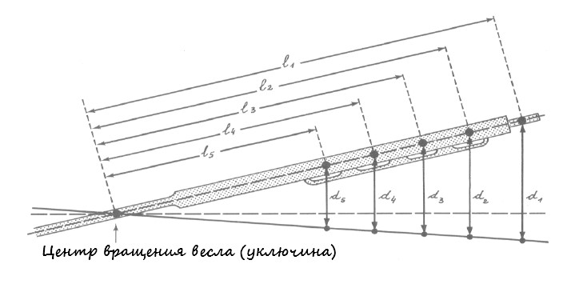
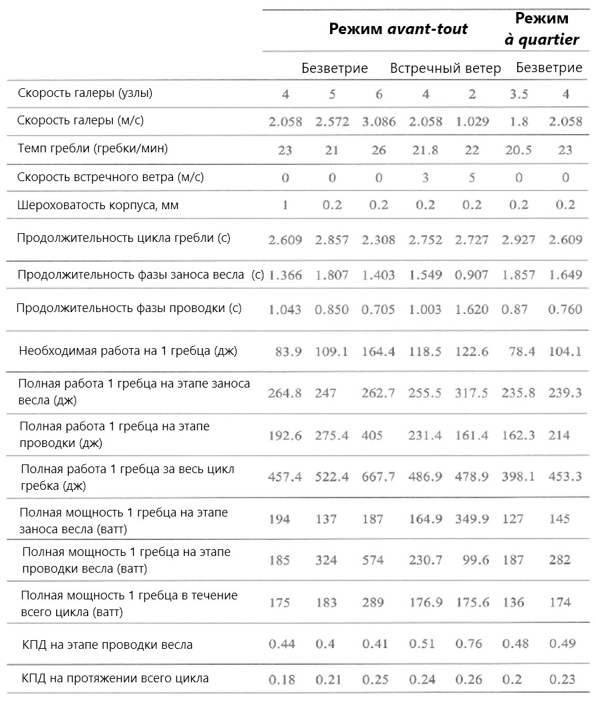

Что-то загрустили мои читатели, уже нет предложений заменить гребцов электрической тягой… Непросто, понимаю. Но давайте соберемся и доведем дело до конца.
В конце последнего поста мы подсчитали реальную работу, исходя из законов, связанных с веслом. Проще всего было бы сейчас разделить эту работу в равных долях на пять гребцов, которые в нашем случае сидят на одной банке и гребут одним веслом. Но это противоречило бы тому, что мы видели в нашем предыдущем рассказе. Поэтому поступим по-другому.
Работа A это произведение силы F на элементарное расстояние d, пройденное в направлении действия силы: A = F · d. Допустим, что каждый гребец прилагает к веслу одинаковую силу. Обозначив перемещение весла у каждого из этих гребцов как d1, d2, d3, d4 и d5 , работу каждого из пяти гребцов можно записать в виде:A1 = F · d1
A2 = F · d2
A3 = F · d3
A4 = F · d4
A5 = F · d5
Естестввенно, A1 > A2 > A3 > A4 > A5 (см. чертеж)
Опустим в нашем рассмотрении пятого гребца («квинтерола») по причине, которую мы указали выше: на этом месте находились самые слабые, порой больные, или уставшие гребцы. Общая работаA = A1 + A2 + A3 + A4
A = (F · d1) + (F · d2) + (F · d3) + (F · d4)
A = F(d1 + d2 + d3 + d4)
A = F· d1 (1 + d2/d1 + d3/d1 + d4/d1)
Мы знаем длины рычагов между кистями рук гребцов и уключиной, которые мы привели в исходных данных и обозначили l1, l2, l3, l4. Из приведенного чертежа ясна пропроциональностьd2/d1 = l2/l1; d3/d1 = l3/l1; d4/d1 = l4/l1
ОтсюдаA = F· d1 (1 + l2/l1+ l3/l1 + l4/l1).
Подставив значения, получим A = F· d1 (1 + 2,27).
F· d1, как нам понятно, это работа загребного (мы обозначили ее в таблице в конце предыдущей части AΣзаг.) Тогда общая работа гребцов на одном веслеA = 3,27 · AΣзаг
В таблице, которую мы поместили в конце прошлого поста, есть графа, содержание которой мы пока не разъяснили. Речь идет о работе против силы инерции тела самого загребного гребца Азаг. Известно, что тело массой m при движении с линейной скоростью v имеет кинетическую энергию ½ mv2. Переходя от скорости v1 к скорости v2 (v2 > v1), тело должно затратить энергию ½ m(v22 – v12). В случае, когда (v2 < v1), энергию тело приобретает. Ясно, что линейная скорость гребца соответствует скорости весла, которым он работает (здесь уместно напомнить, что гребцы на галере на этапе проводки весла не гребут, сгибая руки, их руки всегда остаются выпрямленными). Линейная скорость, мы об этом уже писали, равна произведению угловой скорости на расстояние между центром вращения и движущимся телом. Но ввиду того, что в уравнении кинетической энергии мы должны рассматривать не скорость движения рук гребца, а скорость перемещения его центра тяжести, который расположен ниже точки захвата весла, необходимо ввести коррекцию в расчеты. Эксперименты показывают, что эта коррекция удовлетворительно осуществляется коэффициентом k = 1/1,5. Тогда работа загребного по преодолению силы инерции его тела на каждом элементарном участке движения i будет равняться
Аiзаг = ½ ×65×3,76×k×(·(ωi2 – ω(i-1)2)
Прибавив эту работу к трем другим составляющим, которые были рассмотрены ранее, получим окончательно выражение для работы загребногоAi Σзаг = [(Ai+AiI+Aim):3,27] + Аiзаг
Значения этой величины приведены в таблице предыдущего поста для каждого из 26 элементарных перемещений i.
Последние несколько членов для этой работы имеют отрицательный знак. Теоретически это понятно, но в реальности потраченные гребцом силы не восстанавливаются и поэтому около 28 % работы загребного – это чистые потери. Поэтому для того, чтобы определить полную работу, произведенную загребным, необходимо брать не алгебраическую сумму ее составных частей, а сумму их абсолютных величин. Тогда получимA полн = 275, 36 джоулей
Зная работу загребного на этапе проводки весла в воде, можно найти среднюю мощность, которая требуется для производства этой работы. Для этого нам необходимо знать длительность этой фазы процесса. Снова вернемся к таблице, в последней колонке которой показана длительность каждого этапа. Получена эта величина из выражения скорости весла по отношению к галереVв/галi = dцд/Ti
а именноTi = dцд/ Vв/галi
Элементарное перемещение центра давления определяется из пропорции, содержащей отношения известных нам величин, дающих отстояние от уключины кромки весла и центра давления.
Складывая элементарные промежутки времени из последней колонки таблицы, получим искомое время T = 0,850 сек.
Искомая мощность равняетсяW = A полн /T = 323,95 ватт
Теперь нам надо рассчитать энергетические затраты на этапе заноса весла. Эти затраты не оказывают непосредственного влияния на движение галеры, но без них обойтись невозможно.
Сначала определим длительность фазы заноса, когда лопасть весла движется по воздуху в сторону носа галеры. Сделать это можно легко, вычтя из продолжительности гребка (60 секунд деленные на темп гребли – 21 гребок/минуту, что составляет 2,857 сек) время проводки весла, которое мы только что вычислили (0,850 сек). Не забудем, что какая-то часть времени затрачивается на ввод лопасти в воду и вынос ее из воды. Положив на каждое из этих действий по 0,1 сек, окончательно получимТзанос = (2,857 – 0,85) – 0,2 = 1,807 сек.
Полученный результат дает возможность подсчитать среднюю угловую скорость весла на этапе его заноса (в этом случае у нас нет необходимость делить перемещение весла на элементарные отрезки). Она равна отношению углового перемещения в радианах ко времени перемещения в секундах. Учитывая, что угол перемещения мал, он может быть заменен тангенсом угла, который равен (см. исходные данные) отношению амплитуды движения лопасти в воде (Dлоп = 2,60 м) к длине от конца лопасти до уключины (LR = 8,045 м).ωзанос = (2,60:8,045) : 1,807 = 0,179 рад/сек
Теперь по отработанной уже методике вычислим работу по предолению инерции весла (10,7 джоулей) и инерции тела гребца (13,1 джоулей). Учитывая, что во время заноса весла гребец еще и перемещается по вертикали (по приведенной выше диаграмме можно оценить величину этого перемещения h = 0,35 м), необходимо учесть работу по этому перемещению, равную произведению m·g·h = 223,2 дж. Таким образом, общая работа во время заноса весла, равная сумме указанных выше значений, 247 дж. Отсюда мы можем вычислить мощность, которую должен развить загребной на этапе заноса весла
Wзан = 247 : 1,807 = 136,69 ватт
Мы подошли к концу наших вычислений. Мы получили все, что хотели, в отношении одного гребца - загребного:
- полную работу за время проводки весла (275,4 дж)
- полную работу за время заноса весла (247 дж)
Сложив их, мы получим полную работу загребного за один гребокАцикл/заг = 522,36 джоулей.
А отюда один шаг до вычисления коэффициентов полезного действия (1) на этапе проводки и (2) за весь гребок. Для этого всего лишь надо разделить вычисленную нами ранее необходимую для движения галеры работу гребцов на одном весле на этапе проводки (Авесл = 356,9 джоулей) на 3,27 и получить работу загребного на одном весле Авесл/загАвесл/заг = 109,14 дж.
Разделив эту величину на полную работу загребного на этапе проводки A полн = 275, 36 джоулей, получим КПД загребного во время фазы проводки весла (0,396).
Подобным же образом получим КПД загребного на протяжении всего гребка:Авесл/заг / Ацикл/заг = 0,209
Для тех, кто потерял нить рассуждений или вычислений, приведем итоговую таблицуИтоговая таблица
Допущения и результаты расчетов, основанных на модели движения стандартной галеры

Примечание. Режим Avant tout относится к случаю, когда обстановка требовала присутствия на веслах всех гребцов. Режим à quartier – режим экономного хода. В гребле участвует половина гребцов.
Это еще не все. Мы должны проанализировать полученные данные и разобраться с физиологией и физическими возможностями гребцов. Об этом в следующий раз.